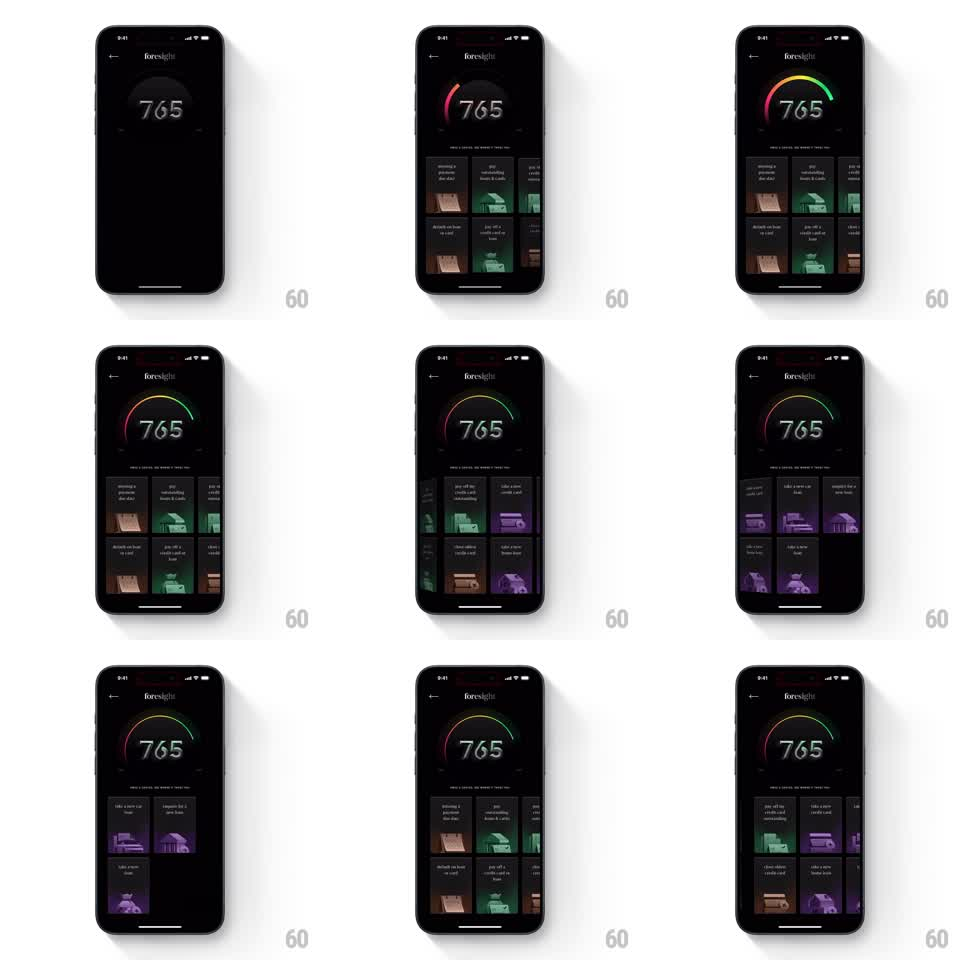

Media
Frame-by-frame

Rebuild this animation 1:1: CRED foresight score explorer - on the dark screen with the 765 score and rainbow gauge at top, a horizontal carousel of 3D-illustrated action cards scrolls below; as the carousel moves between card sets, the gauge's color theme shifts to match (green set, purple set, amber set) with a smooth gradient transition.

Rebuild this animation 1:1: CRED foresight score explorer - on the dark screen with the 765 score and rainbow gauge at top, a horizontal carousel of 3D-illustrated action cards scrolls below; as the carousel moves between card sets, the gauge's color theme shifts to match (green set, purple set, amber set) with a smooth gradient transition.
## Integration
Integration: stack-agnostic spec - springs given as stiffness/damping, timed motions as duration + curve; map every value to your framework and animation library of choice.
## Scene
Dark foresight screen: back chevron, "foresight" header, big "765" score under a semicircular gauge. Below: a two-row grid/carousel of action cards with 3D illustrations ("missing a payment due date", "pay outstanding loans & cards", "take a new credit card", "close oldest credit card", "take a new home loan", "enquire for a new loan"). Card sets are themed: green illustrations, then purple, then amber/sepia.
## Motion spec
Pattern: carousel-driven theme sync.
- Horizontal drag scrolls the card sets 1:1 with a peek of the next set at the edge; release snaps to the set boundary (spring ~300/22).
- The gauge's gradient crossfades to the active set's color over 400ms: green theme (emerald arc), purple theme (violet arc), amber theme (sepia arc); the score digits tint to match (10% hue overlay).
- Cards parallax: illustrations shift horizontally at 0.85x the card speed.
- The active card set scales to 1.0 while outgoing sets sit at 0.95, dimmed 20%.
## Calibration
- The theme transition is continuous with scroll position, not snapped on settle - mid-drag shows blended hues.
- The score number never changes; only the color world around it.
## Reduced motion
Theme crossfades on set change (300ms); no parallax.
## Don't miss
- The gauge arc redraws its gradient smoothly - no hard cuts between themes.
- Card titles stay readable in white through every theme.